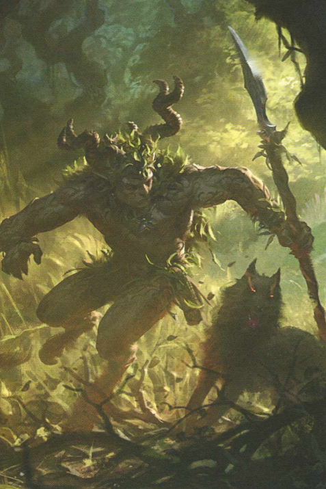

"The gods have seen fit to populate the Old World with all manner of foul monsters. They've also seen fit to grant me with a keen eye and a strong bow to hunt them with."
The Old World is part of the great eastern continent of the Warhammer World. It is the region of that landmass where most of the realms of Men are based and is usually defined as the area west of the Worlds Edge Mountains, north of the Blood River and the Dwarfs sea fortress of Barak Varr and south of the Troll Country. The isle of Albion lies off the coast of the Old World and is similar to the dread land of Norsca, in that it is neither a part of the Old World or entirely separate from it. The Old World is home to the Human realms of the Empire, Kislev, Bretonnia, Tilea, Estalia the independent city-state of Marienburg in the Wasteland, the Elven forest of Athel Loren, and the lawless Border Princess, as well as several Dwarf holds and clans. In the past, before the rise of Men, the Old World was ruled by Dwarfs and Elves, until the "War of the Beard" forever sundered the friendship that once defined relations between a Dwarf and Elf. The ruins of ancient structures built by those elder races are still scattered across the coastlines and high mountains of the Old World.

The different states of the Old World are rarely allied, and although relations between the various realms generally tend to be cordial, they have been known to go to war against each other. While there are interstate rivalries over such things as trade and natural resources, which have often proved a great source of wealth for some Old Worlders, the near-constant threats to life that exist in this region make working together an occasional necessity. The Old World has been invaded many times over the years: Greenskins hordes from the Badlands to the south, Chaos incursions from the north, Skaven attacks from their underground lairs, unrelenting armies of the Undead Vampire Counts from the east, and large scale raids by Dark Elves fleets have all threatened to destroy one or all of the realms of Men. However, Human lives are relatively short, and over the generations the memories of these events fade into myth and legend, and they become nothing more than stories to scare children at bedtime.
Kingdoms of the Old World
Empire

The Empire has stood for over 2500 years as the most powerful nation of men in the Old World and possessing black powder technology while more antiquated weapons are still more common and the norm. The Empire was founded by Sigmar Heldenhammer from a collection of warring tribes inhabiting the region that is now the Empire. Sigmar was of the Unberogen tribe who inhabited what is now Reikland and he is now the patron deity of the Empire. The Empire is led by an Emperor, though he is elected from and by the ranks of the Elector Counts, rulers of each individual state. Though it has gone through various periods of fragmentation, it was reunited two centuries ago into the strong power it now is by Emperor Magnus the Pious. The current Emperor is Karl Franz.

"Three things make the Empire great; faith, steel and gunpowder."
Bretonnia

Bretonnia is a large feudal kingdom and It was formed from a collection of warring city-states by Gilles le Breton at the bidding of the Lady of the Lake who would later become the patron deity of Bretonnia. Bretonnia is the second largest nation in the Old World after the Empire and has a strict class system where the upper class abide by principles of chivalry and are rich and educated. The lower class makes up the majority of the population, and is made up of oppressed peasants. Bretonnians eschew black powder weaponry as cowardly favouring more traditional mounted combat using knights, accompanied by hordes of peasant footmen as support. The Knights of Bretonnia are regarded as the greatest in Old World, and all male nobles are expected to train in the arts of war and chivalry, or face dishonour. Most renowned of all are the Grail Knights, beings who have supped from the Holy Grail and become imbued with fay power and longevity. Bretonnia is ruled by a Royarch, a fearsome warrior-king who is almost always a Grail Knight. The current Royarch is King Louen Leoncoeur – The "Lionhearted".

"I give my body, heart and soul, to the Lady whom I seek. No plea for help shall find me wanting. No obstacle will stand before me. No evil will taint the lands bequeathed unto me. When the clarion call is sounded, I will ride out and fight in the name of Liege and Lady. That which is sacrament, I shall preserve. That which is sublime, I will protect. That which threatens, I will destroy, for my holy wrath will know no bounds. Honour is all. Chivalry is all. Rejoice, for we, the Knights of Bretonnia… will be your shield."
Kislev
Kislev is know for its freezing temperatures, and is the northernmost nation of the Old World and bears the brunt of most Chaos invasions. Kislev is ruled by the Tzar and the Ice Queen. Currently Kislev is ruled only by a Ice Queen Katarin. The capital city Kislev, Erengrad and Praag are the three largest cities in Kislev, with Erengrad and Praag both being situated on the river Lynsk, Kislev’s largest river. Kislev was founded around 1000 years after the Empire by Gospodar and Ungol tribes. Its main god is Ursun, the father of Bears, at least in the Gospodar influenced south. In the nomadic north, the Ungol tribes keep the worship of Dahz and Tor, as well as the veneration of minor spirits. Kislev army specializes in use of heavy bear cavarly as their main battle units, and they are mostly consisted of Kislevs male nobles.

"You look down on us and think we are little better than barbarians, but you should be glad we are, for without us here, the northern tribes would be dining on the flesh of your children in your burning homes. But for the courage that flows in our veins would your lands be theirs. Look down on us? You should get on your knees and thank us every day!"
Athel Loren
Athel Loren is a magical forest comprised of ancient, sentient trees in the southeast of Bretonnia, and is inhabited by the Wood Elves, or Asrai as they call themselves. The Wood Elves have inhabited the area since the main body of High Elves was driven out almost 5000 years ago after the War of the Beard, a titanic conflict with the Dwarfs, and have become deeply bonded to the forest. While isolated colonies of Wood Elves exist elsewhere, Athel Loren is their homeland. They are ruled by a King and Queen of the Woods, that currently being Orion and Ariel. Asrai are highly secretive and isolationist race, only going to battle when their realm needs defending from the intruders. They are masters of ambushing and fighting in the woods. Their armies mostly consist of lightly armoured missile infantry and deer cavalry.
"Athel Loren shall not suffer the presence of Men, nor Orcs, nor Dwarfs, nor Beastmen. If a foe takes a single step upon such sacred soil, they shall not take another."
Karaz Ankor

The Karaz Ankor, or "The Everlasting Realm" in dwarven, is the primary homeland of Dwarven Kingdoms, the holds and cities of the Worlds Edge Mountains that they have inhabited since the earliest days of their recorded history. Their original homeland was located in the mountains of the Sounthlands, but they migrated northwards in search of new veins of precious metals and gems to mine, gradually settling in the Worlds Edge Mountains. The Dwarf people as a whole are sturdy and strong, brilliant craftsmen and excellent warriors, but above all they prize themselves on their loyalty to each other and to those they are indebted to. This strong bond of kinship has ensured that the Dwarfs stand as one of the most unified races in the world. They are known far and wide as the greatest miners and tunnellers in the world, the ageless halls of Karaz-a-Karak, "Everpeak", are but one gigantic example of how huge their works can become. As expected, the Dwarfs are highly proficient smiths and craftsmen, capable of producing works far more beautiful than the Elven metalworkers in far Ulthuan and hundreds of times more valuable than the trinkets of Men. Proud, honourable and enduring, it is said that the Dwarfs shall weather the horrors and misery of the world until its final bitter end. Thorgrim Grudebearer is the current High King of the dwarfes. In his possesion is the Dammaz Kron or the The Great Book of Grudges, where he writes down every wrong and treacherous deed that has been done against the dwarfs. With Karaz Ankor being such a wast kingdom, it has to have great armies to defend it. Dwarven armies consist of a wide range of heavy melee and range infantry and also Black Powder artillery.
"We sons of Grungni may have drunk deep from the bitter waters of misfortune, but we yet survive. Whilst a single Dwarf draws breath, we will fight the evils that assail us, and we will never, ever give up."